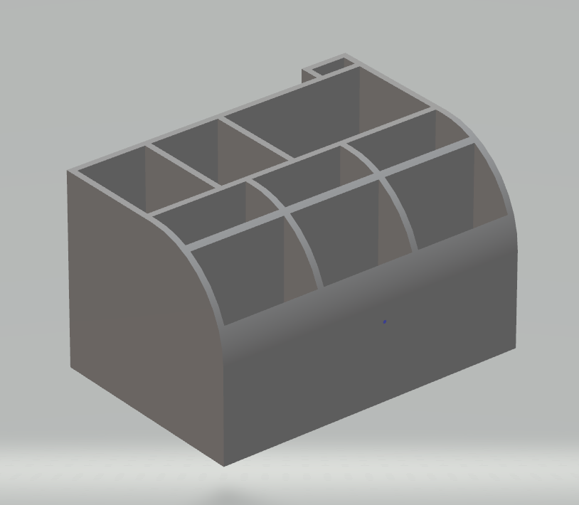

This is a simple 3d modeling design that I came up with that helps me organize desk tools. In this particular case this organizer needed simple things like pencils and pens as well as very specific things like a caliper, edge ruler, and Excacto knifes.
Due to the simplistic nature of this design, it can be quite modular so that you can add to it or even take away from it but still have the same esthetic that exists throughout all the designs. This was my goal when ever I design something in 3D.
This particular project was something that was done in a couple of minutes due to the level of complexity that exists. This is a good example of how even simple objects that with simple shapes have a uniqueness to them.